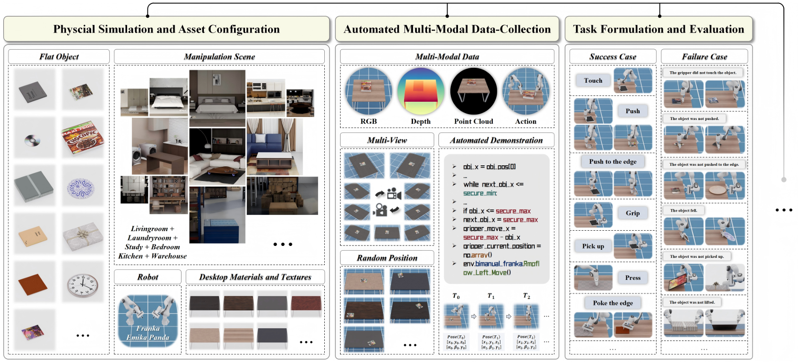

FlatLab: A Unified Methodology Framework and Simulation-Based Benchmark for Robotic Manipulation of Flat Objects
Abstract
Robotic manipulation of flat objects is challenging due to ungraspable configurations and strong variations in object geometry and material. Existing methods rely on heuristic pre-manipulation and are often evaluated in closed settings with limited generalization. We propose a unified grasping framework that decouples manipulation into a strategy generator and an action execution module. The strategy generator predicts appropriate manipulation strategies from object point clouds by learning strategy-centric, object-invariant representations via simulated data transformation and contrastive learning. Conditioned on the predicted strategy, the execution module decomposes long-horizon manipulation into reusable action primitives and dynamically composes them to generate stable trajectories. To enable systematic evaluation, we introduce FlatLab, a comprehensive simulation benchmark for robotic flat-object manipulation. FlatLab provides high-fidelity physical simulation of diverse rigid and deformable flat objects, automated multi-modal data collection, and standardized task definitions and evaluation protocols. Experiments conducted in FlatLab demonstrate that our approach generalizes effectively to unseen objects and categories, outperforming existing baselines. The project page is available at https://flatlab-web.github.io/, and the code will be publicly released.
Scene Demonstrations

Main Function Modules of FlatLab. First, FlatLab provides configurable assets with high-precision physical simulations, including flat objects, manipulation scenarios, and associated material textures. Second, FlatLab supports automated multi-modal data collection that yields perceptual and kinematic data from both successful and failed demonstrations. Third, FlatLab formalizes a set of robotic flat-object manipulation tasks together with their evaluation criteria. FlatLab’s functionalities are fully reconfigurable and extensible, facilitating continued research.
Real-World
StrategyA
StrategyA
StrategyB
StrategyB
StrategyC
StrategyC